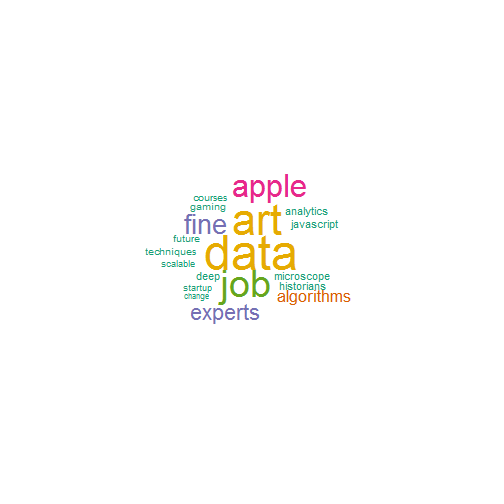

This presentation includes the following parts.
- Introduction
- Input
- Output
- References
purplesusy
This presentation includes the following parts.
This Shiny App searches tweets containing keywords and plots a wordcloud for those tweets. When you specify the search term, the date ranges and number of tweets, this App will parse relevant tweets using twitter's API and plot a wordcloud.
App URL: http://purplesusy.shinyapps.io/twitter/
GitHub Repo: https://github.com/purplesusy/pml
R packages used:
Below lists contain the input fields. User can change those input fields and click "Update" to update the wordcloud.
After specifying the search word(s), date range, and number of tweets, a wordcloud for those tweets will be generated.
Note: it takes a few seconds to generate the wordcloud.

The work presented in this Shiny App is inspired by the following excellent work/tutorials:
Thank you!